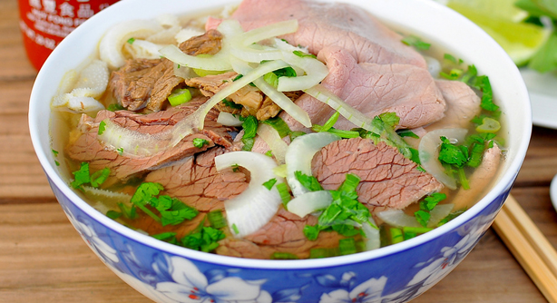

RICE NOODLE SOUP (PHO)
Pho is a Vietnamese soup with a beef base, typically served with rice noodles and beef or chicken with condiments such as siracha hot sauce, fish sauce, and hoisin sauce. It is usually topped with a sprinkle or spring onions and coriander. Click HERE for more information.